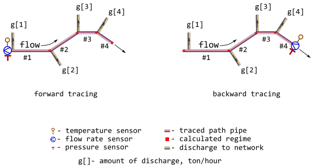

Minenergo-325. Trace thermal-hydraulic regime for linear segment of district heating network
Source:R/m325traceline.R
m325traceline.RdTrace values of thermal-hydraulic regime (temperature, pressure, flow_rate, and other) along the adjacent linear segments of pipeline using norms of heat loss values prescribed by Minenergo Order 325.
Usage
m325traceline(
temperature = 130,
pressure = mpa_kgf(6),
flow_rate = 250,
g = 0,
a = 0,
d = 711,
wth = 12.7,
len = c(600, 530, 300, 350),
year = 1986,
insulation = 0,
laying = "underground",
beta = FALSE,
exp5k = TRUE,
roughness = 0.006,
inlet = 0,
outlet = 0,
elev_tol = 0.1,
method = "romeo",
forward = TRUE,
absg = TRUE,
strict_sizes = FALSE
)Arguments
- temperature
Traced thermal hydraulic regime. Sensor-measured temperature of heat carrier (water) inside the pipe sensor-measured at the inlet (forward tracing) or at the outlet (backward tracing) of path, [°C]. Type:
assert_number.- pressure
Traced thermal hydraulic regime. Sensor-measured absolute pressure of heat carrier (water) sensor-measured at the inlet (forward tracing) or at the outlet (backward tracing) of path, [MPa].Type:
assert_number.- flow_rate
Traced thermal hydraulic regime. Amount of heat carrier (water) sensor-measured at the inlet (forward tracing) or at the outlet (backward tracing) of path, [ton/h]. Type:
assert_number.- g
amount of heat carrier discharge to network for each pipe segment in the tracing path enumerated along the direction of flow. If flag
absgisTRUEthen they treat argumentgas absolute value in [ton/h], otherwise they do as percentage of flow_rate in the pipe segment. Type:assert_double.- a
heat carrier (water) volume loss factor of cylindrical pipe, [h⁻¹]. Type:
assert_double.- d
nominal (outside) diameters of subsequent pipes in tracing path that are enumerated along the direction of flow, [mm]. Type:
assert_double.- wth
nominal wall thickness of pipe, [mm]. Type:
assert_double.- len
length of subsequent pipes in tracing path that are enumerated along the direction of flow, [m]. Type:
assert_double.- year
year when pipe is put in operation after laying or total overhaul for each pipe in tracing path enumerated along the direction of flow. Type:
assert_integerish.- insulation
insulation that covers the exterior of pipe:
0no insulation
1foamed polyurethane or analogue
2polymer concrete
for each pipe in tracing path enumerated along the direction of flow. Type:
assert_numericandassert_subset.- laying
type of pipe laying depicting the position of pipe in space:
airchannelroomtunnelunderground
for each pipe in tracing path enumerated along the direction of flow. Type:
assert_characterandassert_subset.- beta
logical indicator: should they consider additional heat loss of fittings? Logical value for each pipe in tracing path enumerated along the direction of flow. Type:
assert_logical.- exp5k
logical indicator for regime of pipe: is pipe operated more that
5000hours per year? Logical value for each pipe in tracing path enumerated along the direction of flow. Type:assert_logical.- roughness
roughness of internal wall for each pipe in tracing path enumerated along the direction of flow, [m]. Type:
assert_double.- inlet
elevation of pipe inlet for each pipe in tracing path enumerated along the direction of flow, [m]. Type:
assert_double.- outlet
elevation of pipe outlet for each pipe in tracing path enumerated along the direction of flow, [m]. Type:
assert_double.- elev_tol
maximum allowed discrepancy between adjacent outlet and inlet elevations of two subsequent pipes in the traced path, [m]. Type:
assert_number.- method
method of determining Darcy friction factor
romeovatankhahbuzzelli
Type:
assert_choice. For more details seedropp.- forward
tracing direction flag: is it a forward direction of tracing? If
FALSEthe backward tracing is performed. Type:assert_flag.- absg
whether argument
g(amount of heat carrier discharge to network) is an absolute value in [ton/h] (TRUE) or is it a percentage of flow rate in the pipe segment (FALSE)? Type:assert_flag.- strict_sizes
verify diameter and wall thickness with the actual pipe specifications produced. Type:
assert_flag.
Value
A list containing results (detailed log) of tracing for each
pipe in tracing path enumerated along the direction of flow:
temperatureTraced thermal hydraulic regime. Traced temperature of heat carrier (water), [°C]. Type:
assert_double.pressureTraced thermal hydraulic regime. Traced pressure of heat carrier (water) for each pipe in tracing path enumerated along the direction of flow, [MPa]. Type:
assert_double.flow_rateTraced thermal hydraulic regime. Traced flow rate of heat carrier (water) for each pipe in tracing path enumerated along the direction of flow, [ton/h]. Type:
assert_double.lossTraced thermal hydraulic regime. Normative specific heat loss power for each pipe in tracing path enumerated along the direction of flow, [kcal/m/h]. Type:
assert_double.fluxTraced thermal hydraulic regime. Normative heat flux for each pipe in tracing path enumerated along the direction of flow, [W/m²]. Type:
assert_double.QTraced thermal hydraulic regime. Normative heat loss for each pipe in tracing path enumerated along the direction of flow per day, [kcal]. Type:
assert_double.
Type: assert_list.
Details
They consider only simple tracing paths which do not contain rings and any kind of parallelization. At the same time bidirectional (forward and backward) tracing is possible in accordance with sensor position. They also may consider discharges to network at the inlet of each pipeline segment as an approximation of actual forks of flows.
Relevant illustration of the adopted assumptions for 4-segment tracing path is depicted on the next figure.

They make additional check for consistency of inlet and outlet
values for subsequent pipe segments. Discrepancy of appropriate elevations
cannot be more than elev_tol.
They also may consider some normative volume loss of heat carrier (water) by tuning volume loss factor a in range 0.0 – 0.0025 h⁻¹.
Optional verification of pipe diameters and wall thicknesses is performed
against b36pipedata data.
See also
Other Regime tracing:
dropg(),
dropp(),
dropt(),
m325tracebw(),
m325tracefw(),
tracebw(),
tracefw(),
traceline()
Examples
library(pipenostics)
# Consider 4-segment tracing path depicted.
# First, let sensor readings for forward tracing:
t_fw <- 130 # [°C]
p_fw <- mpa_kgf(6) * all.equal(.588399, mpa_kgf(6)) # [MPa]
g_fw <- 250 # [ton/h]
# Let discharges to network for each pipeline segment are somehow determined
# as
discharges <- seq(0, 30, 10) # [ton/h]
# Then the calculated regime (red squares) for forward tracing is
m325traceline(t_fw, p_fw, g_fw, discharges, forward = TRUE)
#> $temperature
#> [1] 129.1698 128.4075 127.9377 127.3039
#>
#> $pressure
#> [1] 0.5877977 0.5873084 0.5870757 0.5868732
#>
#> $flow_rate
#> [1] 250 240 220 190
#>
#> $loss
#> [1] 352.2900 351.4092 350.6004 350.1019
#>
#> $flux
#> [1] 183.4259 182.9672 182.5461 182.2866
#>
#> $Q
#> [1] 5072976 4469925 2524323 2940856
#>
# Next consider values of traced regime as sensor readings for backward
# tracing:
t_bw <- 127.3367 # [°C]
p_bw <- .5870330 # [MPa]
g_bw <- 190 # [ton/h]
# Then the calculated regime (red squares) for backward tracing is
regime_bw <- m325traceline(t_bw, p_bw, g_bw, discharges, forward = FALSE)
print(regime_bw)
#> $temperature
#> [1] 130.0282 129.1997 128.4388 127.9696
#>
#> $pressure
#> [1] 0.5885598 0.5879580 0.5874684 0.5872356
#>
#> $flow_rate
#> [1] 250 250 240 220
#>
#> $loss
#> [1] 351.4409 350.6336 350.1357 349.4642
#>
#> $flux
#> [1] 182.9837 182.5634 182.3042 181.9546
#>
#> $Q
#> [1] 5060748 4460059 2520977 2935500
#>
# Let compare sensor readings with backward tracing results:
with(regime_bw, {
lambda <- function(val, constraint)
c(val, constraint, constraint - val,
abs(constraint - val) * 100/constraint)
first <- 1
structure(
rbind(
lambda(temperature[first], t_fw),
lambda(pressure[first], p_fw),
lambda(flow_rate[first], g_fw)
),
dimnames = list(
c("temperature", "pressure", "flow_rate"),
c("sensor.value", "traced.value", "abs.discr", "rel.discr")
)
)
})
#> sensor.value traced.value abs.discr rel.discr
#> temperature 130.0281773 130.000000 -0.0281772695 0.02167482
#> pressure 0.5885598 0.588399 -0.0001607797 0.02732495
#> flow_rate 250.0000000 250.000000 0.0000000000 0.00000000
# To address the problem of possible norm losses of the heat carrier,
# they could roughly define the leaks as follows:
# * maximum value prescribed to heat carrier loss factor, [h⁻¹],
# multiplied by heating season relative duration:
a <- 0.0025 * ( (365 - 90)/365 )
# * length of subsequent pipes, [m]:
l <- c(600, 530, 300, 350)
# * nominal (outside) diameters of subsequent pipes, [m]:
D <- rep.int(700, 4) * 1e-3
# * average year volumes of heat carrier (no heat carrier for 90 days in
# summer), [m³]
V <- pi * D^2 / 4 * l
# * finally they get, [ton/h]:
discharges <- a * V * drop(iapws::if97("rho", mpa_kgf(6), k_c(130))) * 1e-3
# * and the calculated regime (red squares) for forward tracing becomes
m325traceline(g = discharges, forward = TRUE)
#> $temperature
#> [1] 129.1685 128.4344 128.0194 127.5352
#>
#> $pressure
#> [1] 0.5877996 0.5872720 0.5869740 0.5866271
#>
#> $flow_rate
#> [1] 249.5933 249.2341 249.0308 248.7936
#>
#> $loss
#> [1] 352.2900 351.4077 350.6289 350.1886
#>
#> $flux
#> [1] 183.4259 182.9665 182.5610 182.3317
#>
#> $Q
#> [1] 5072976 4469906 2524528 2941584
#>
# Let's compare it with more formal calculations:
m325traceline(a = a, forward = TRUE)
#> $temperature
#> [1] 129.1685 128.4346 128.0196 127.5355
#>
#> $pressure
#> [1] 0.5877995 0.5872718 0.5869737 0.5866266
#>
#> $flow_rate
#> [1] 249.6099 249.2651 249.0697 248.8418
#>
#> $loss
#> [1] 352.2900 351.4078 350.6291 350.1888
#>
#> $flux
#> [1] 183.4259 182.9665 182.5611 182.3318
#>
#> $Q
#> [1] 5072976 4469907 2524529 2941586
#>